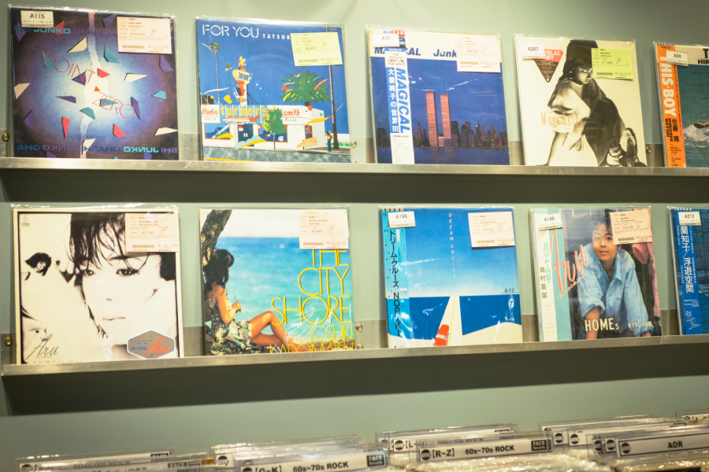

La era dorada del City Pop
City Pop, un género musical japonés que se originó a mediados de la década de 1970 y 1980, con un sonido que fusionaba elementos de la música pop occidental (como el jazz, funk, r&b, dance pop y, por sobre todo, disco) junto a influencias locales del país nipón.
Algunos de sus más grandes exponentes incluyen a artistas como Tatsuro Yamashita, Mariya Takeuchi y Taeko Ohnuki, quienes sin duda han dejado una marca indeleble en la música japonesa con sus melodías pegajosas y letras emotivas. Artistas que no solo han sido aclamados en su país, sino que también se han ganado el reconocimiento internacional por su contribución a la música.
En la actualidad, el City Pop ha experimentado un resurgimiento en popularidad, especialmente entre los jóvenes que se ven interesados en su vibrante sonido junto con la estetica nostalgica con la que se le asocia. Este género ha sabido instalarse en producciones mainstream y ha influenciado a una nueva generación de artistas por todo el mundo. Su fusión de elementos retros y modernos ha demostrado ser atemporal, dando lugar a un renacimiento del sonido en álbumes y canciones de artistas actuales (como se escuchó en la canción Out of Time de The Weeknd, en donde se sampleó la canción Midnight Pretenders de la cantante Tomoko Aran) lo que ha llevado a que el City Pop siga siendo relevante en la escena musical actual y continúe inspirando a músicos y oyentes por igual.
